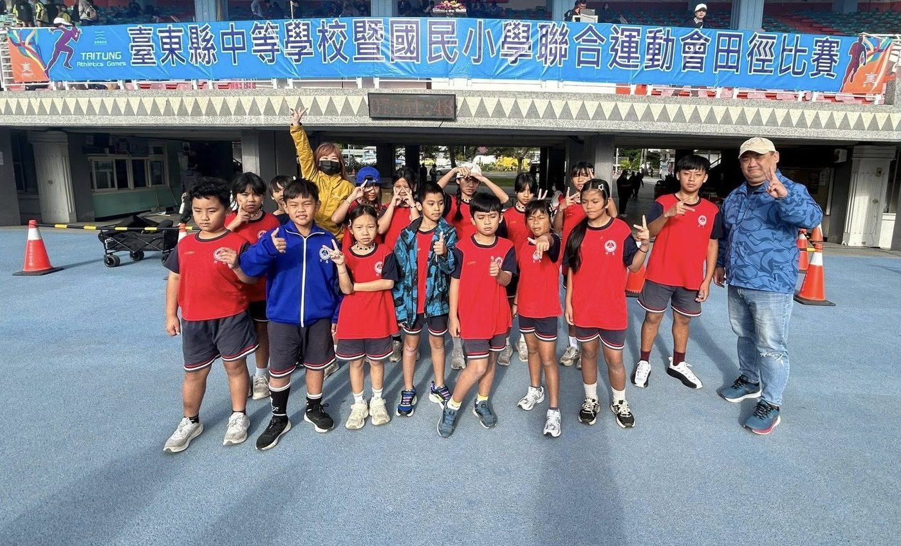
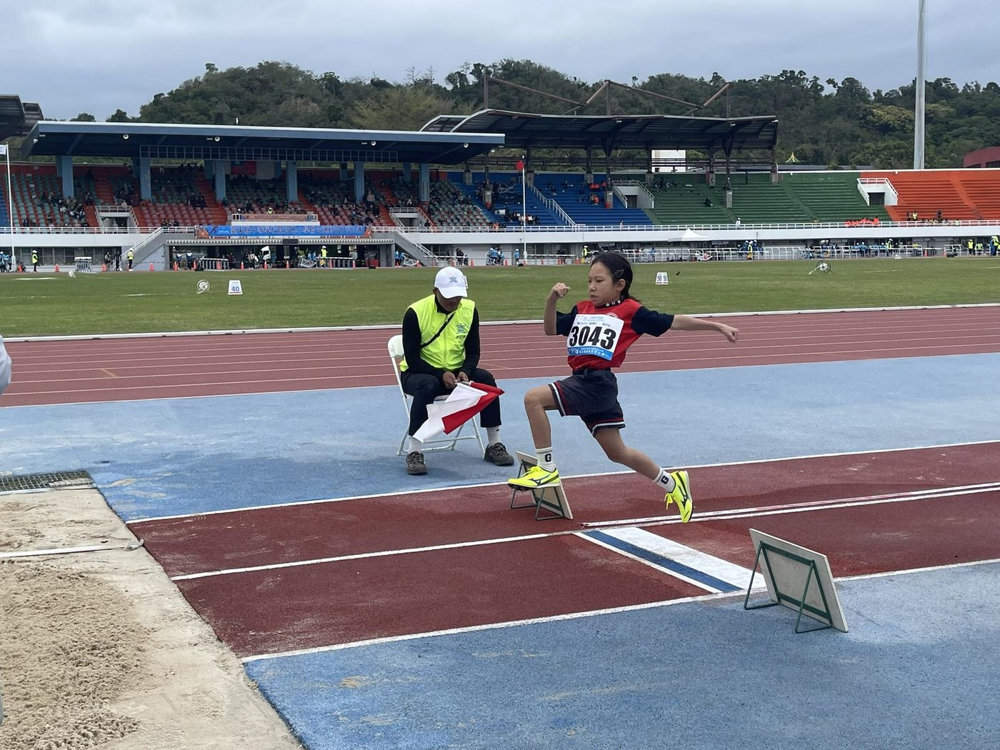
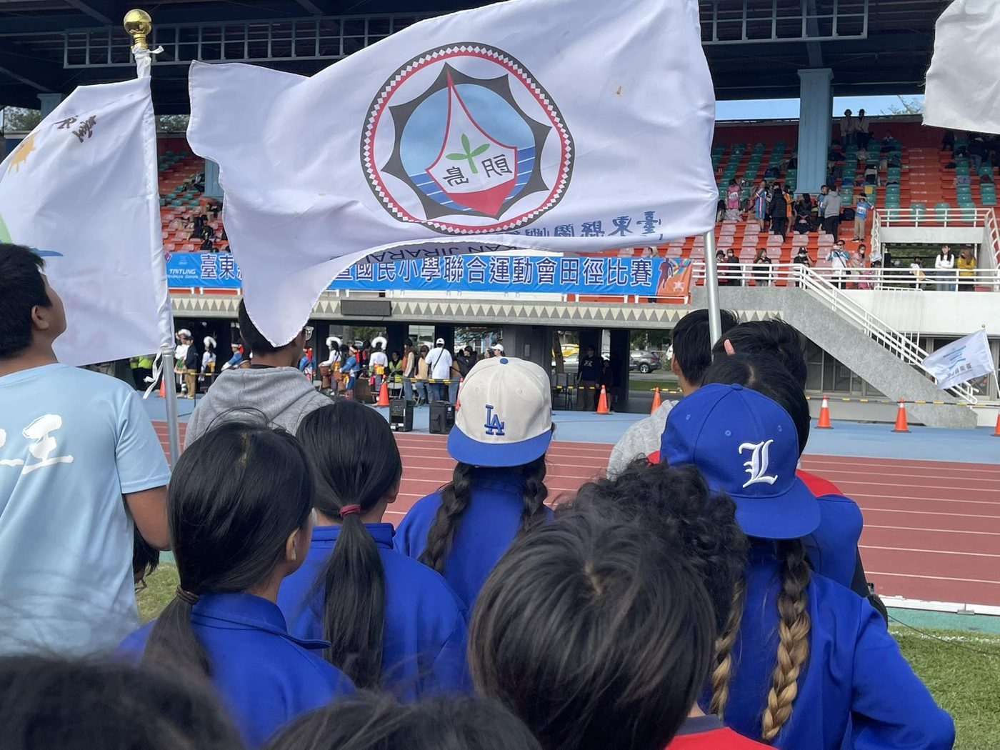

01我的故事
在蘭嶼北端的朗島部落，有一群與海風競速的孩子 。自 104 年成立以來，朗島國小田徑隊已深耕多年，目前由 20 位充滿天賦的雅美（達悟）族小將組成 。這不僅是一支運動隊伍，更是離島孩子多元展能的生命舞台 。我們深信，每位孩子手中都握著通往未來的鑰匙，而田徑正是開發他們天賦、磨練堅韌體魄的最佳途徑 。
離島韌性，天賦開發：我們利用蘭嶼獨特的環島公路與灘頭作為訓練場，開發離島孩子與生俱來的運動潛能 。
品格第一，品格優於成績：除了賽場上的速度，我們更注重「品格教育」。透過雙師資指導（教練與助教），引導孩子在訓練中學會紀律、禮節與責任感 。
打破地理限制，看見世界：雖然跨海參賽成本高昂，但我們堅持帶孩子走出去。每一次的登島比賽，都是他們拓展視野、建立自信的重要契機 。



推薦理由
1. 開發離島天賦，打破地理限制的唯一機會：蘭嶼雅美（達悟）族孩子具備極佳的運動潛能，本計畫致力於開發這群孩子與生俱來的體能天賦 。由於離島交通與住宿成本高昂，贊助資源能直接化為孩子「跨海參賽」的門票，讓他們不因地理位置而失去被看見的機會 。
2.實績證明韌性，低資源下的高成就感：在資源匱乏且無室內場地的環境下，田徑隊仍然成績優異，並多次在全縣的比賽中得名。田徑隊成立已 9 年，具備穩定的訓練傳統與規模，資助款項能精準投入於具備延續性的專業教育 。
3.品格教育先行，培養德才兼備的未來人才：品格優於成績，計畫強調「品格教育」，透過教練與助教雙師資引導，將紀律、守法、禮節與責任感融入每日訓練中 。
4.提供離島孩子多元發展的可能性：田徑隊不只是運動社團，更是離島孩子銜接本島優質體育中學、獲取特色招生或體育保送的重要管道，為其人生開拓更多元的職涯選擇 。透過跨海參賽建立孩子的自信心與集體榮譽感，讓體育成為朗島部落與世界接軌的重要文化窗口 。